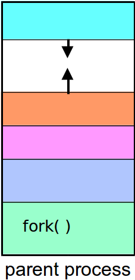
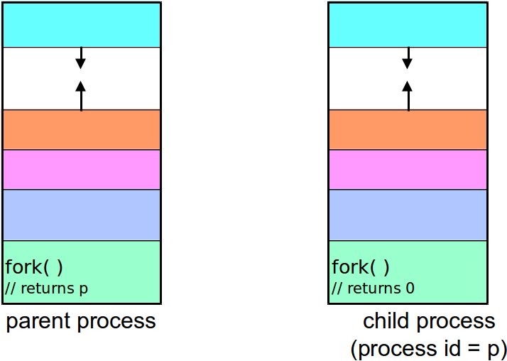
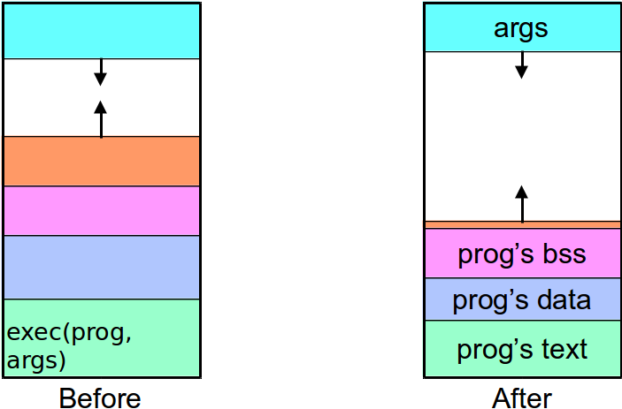
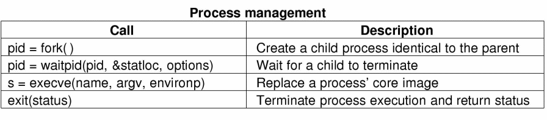

Initialized - static and global variables with nonzero values
Uninitialized - (BSS: Block Started by Symbol) static and global variables
Stack - Local Variables, function parameters,
Heap - Dynamic variables
Process Creation - Fork
The fork() system call
#include <unistd.h>
pid_t fork(void); // prototype for fork
fork() returns a process id (a small integer)
fork() returns twice!
In the parent - fork returns the id of the child process
In the child - fork returns a 0
Example
#include <unistd.h>#include <stdio.h>void main(void) {
pid_t pid = fork();
if(pid > 0)
printf("I am the parent\n");
elseif (pid == 0)
printf("I am the child\n");
else
printf("ERROR!\n");
}
Creating a Process: Before fork()

Creating a Process: After fork()

Parent and Child Processes
The child process is a copy of the parent process
It is running the same program
Same memory contents
It has its own process ID
The child process inherits many attributes from the parent, including:
current working directory, user id
group id
Process Hierarchies
UNIX: Parent creates a child process, child can create more processes
Forms a hierarchy
UNIX calls this a ``process group''
All processes within a group are logically related
Windows has no concept of process hierarchy
all process are created equal
Death and Destruction
All processes usually end at some time during runtime (with the exception of init)
Processes may end either by:
executing a return from the main function
calling the exit(int) function
calling the abort(int) function
When a process exits, the OS delivers a termination status to the parent process
Waiting
Parent processes often wait for their child process to end
Parent processes do that via a wait() call
pid_t wait(int * status);
pid_t waitpid( pid_t pid int* status,...);
Process Switching - Exec
Switching Programs
fork() creates a new process
This would be almost useless if there was not a way to switch which program is associated with the new process
The exec() system call is used to load a new program into an existing process
exec(): Loading a New Image

exec() example
#include <unistd.h>#include <stdio.h>#include <stdlib.h>
main() {
printf("executing ls\n");
execl("/bin/ls", "ls", "-l", (char*)0);
/* if execl returns, the call failed */
perror("execl failed to run ls");
exit(1);
}
System Calls for Process Management

More fork()
How many processes does this piece of code create?
int main() {
fork();
fork();
}
Bad Example (don't try this!)
#include <unistd.h>#include <stdio.h>void main(void) {
while (!fork())
printf("I am the child %d\n", getpid());
printf("I am the parent %d\n", getpid());
}
Fork Bomb!
Fork/Exec Example
if (fork( ) == 0) {
// child process// set up I/O in child
execv(newprogram, parameters);
// load new image// if we get here, there’s a problem
}
// parent process continues here
A stripped down shell
while (TRUE) { /* repeat forever *//* display prompt, get input */
type_prompt( );
read_command (command, parameters)
/* fork off child process */if (fork() != 0) {
/* Parent code - wait for child to exit */
waitpid( -1, &status, 0);
} else {
/* Child code - execute command */
execve (command, parameters, 0);
}
What is the output of this?
int main() {
int i;
for (i=0; i<3; i++) {
fork();
printf(“%d\n”,i);
}
return (0);
}